Risk Off Strategy¶
[1]:
# If you would like to refresh your data, please execute the bellow codes.
import pandas as pd
import numpy as np
from datetime import datetime
from tqdm import tqdm
import matplotlib.pyplot as plt
from mypo import Loader
DOWNLOAD = False
if DOWNLOAD:
tickers = pd.read_csv("/app/docs/tutorial/tickers.csv")
loader = Loader()
for row in tqdm(tickers.to_dict('record')):
loader.get(row['Ticker'], expense_ratio=row['ExpenseRatio'] * 0.01)
loader.save('/app/docs/tutorial/all.bin')
[2]:
loader = Loader.load('/app/docs/tutorial/all.bin')
loader = loader.since(datetime(2007, 1, 1))
market = loader.get_market()
selected_tickers = ['SPY', 'QQQ', 'TLT', 'IEF', 'GLD']
[3]:
from mypo import split_k_folds
from mypo.optimizer import NoOptimizer, RiskParityOptimizer
from mypo.rebalancer import MonthlyRebalancer
from mypo.evacuator import CovarianceEvacuator, MovingAverageEvacuator, CalendarEvacuator, FixedEvacuator
from mypo import Runner
folds = split_k_folds(market, 1, 200)
fold = folds[0].filter(selected_tickers)
Reference Performance (SPY)¶
[4]:
optimizer = NoOptimizer([1, 0, 0, 0, 0])
runner = Runner(
rebalancer=MonthlyRebalancer(optimizer=optimizer),
)
runner.run(
fold=fold,
verbose=True
)
report = runner.report()
display(report.summary())
display(report.annual_summary())
ax = report.history().plot()
plt.legend(bbox_to_anchor=(1.05, 1), loc='upper left', borderaxespad=0)
plt.show()
ax = report.history_weights().plot.area(stacked=True)
plt.legend(bbox_to_anchor=(1.05, 1), loc='upper left', borderaxespad=0)
plt.show()
100%|██████████| 3416/3416 [00:46<00:00, 73.02it/s]
tickers yearly total return sharpe ratio \
0 [SPY, QQQ, TLT, IEF, GLD] 1.081401 0.313451
max draw down max draw down span
0 0.452531 1318
return std sharpe ratio draw down
2007-12-31 -0.070057 0.203789 -0.441912 0.900602
2008-12-31 -0.342729 0.404963 -0.895710 0.495873
2009-12-31 0.230129 0.257868 0.814872 0.452531
2010-12-31 0.130888 0.171868 0.645192 0.685780
2011-12-31 0.017959 0.217142 -0.009400 0.749978
2012-12-31 0.153834 0.121414 1.102295 0.866839
2013-12-31 0.250756 0.101235 2.279415 0.947054
2014-12-31 0.129200 0.104288 1.047103 0.931672
2015-12-31 -0.005435 0.144072 -0.176542 0.889826
2016-12-31 0.125102 0.118920 0.883803 0.878241
2017-12-31 0.189369 0.062425 2.713175 0.975451
2018-12-31 -0.049852 0.153296 -0.455667 0.823208
2019-12-31 0.279925 0.112742 2.305479 0.853734
2020-12-31 0.133233 0.295515 0.383173 0.694815
2021-12-31 0.116567 0.129461 0.745912 0.963183
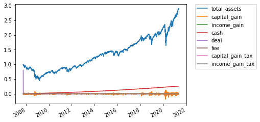
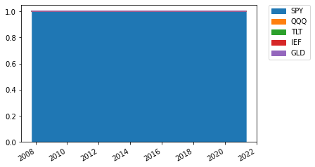
RiskParityOptimizer without filter¶
[5]:
optimizer = RiskParityOptimizer(risk_target=[0.2, 0.25, 0.2, 0.25, 0.1])
runner = Runner(
rebalancer=MonthlyRebalancer(optimizer=optimizer),
)
runner.run(
fold=fold,
verbose=True
)
report = runner.report()
display(report.summary())
display(report.annual_summary())
ax = report.history_assets().plot()
plt.legend(bbox_to_anchor=(1.05, 1), loc='upper left', borderaxespad=0)
plt.show()
ax = report.history_weights().plot.area(stacked=True)
plt.legend(bbox_to_anchor=(1.05, 1), loc='upper left', borderaxespad=0)
plt.show()
ax = report.history_cost().plot.area(stacked=True)
plt.legend(bbox_to_anchor=(1.05, 1), loc='upper left', borderaxespad=0)
plt.show()
ax = report.history_cash_vs_assets().plot.area(stacked=True)
plt.legend(bbox_to_anchor=(1.05, 1), loc='upper left', borderaxespad=0)
plt.show()
100%|██████████| 3416/3416 [00:46<00:00, 72.98it/s]
tickers yearly total return sharpe ratio \
0 [SPY, QQQ, TLT, IEF, GLD] 1.065496 0.757629
max draw down max draw down span
0 0.882856 265
return std sharpe ratio draw down
2007-12-31 0.039391 0.056118 0.345552 0.980410
2008-12-31 0.005365 0.090097 -0.162430 0.882856
2009-12-31 0.037423 0.085794 0.203074 0.909050
2010-12-31 0.112327 0.058861 1.568566 0.954248
2011-12-31 0.138088 0.056297 2.097568 0.962055
2012-12-31 0.067003 0.043323 1.084949 0.975011
2013-12-31 -0.009058 0.057794 -0.502794 0.934536
2014-12-31 0.119404 0.039672 2.505619 0.965269
2015-12-31 0.002096 0.056932 -0.314480 0.956437
2016-12-31 0.035730 0.049578 0.317268 0.934322
2017-12-31 0.086992 0.038628 1.734288 0.947385
2018-12-31 -0.005998 0.046942 -0.553830 0.961768
2019-12-31 0.148908 0.044444 2.900472 0.976181
2020-12-31 0.156426 0.078868 1.729802 0.914449
2021-12-31 -0.023569 0.071645 -0.608115 0.942616
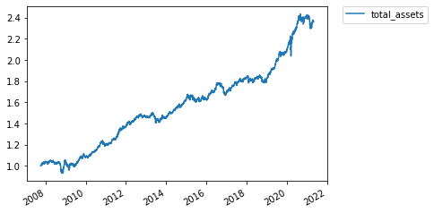
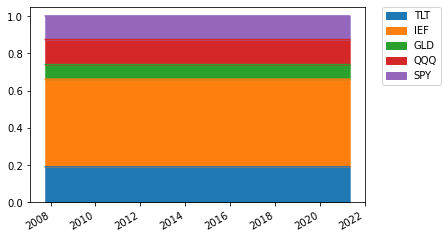
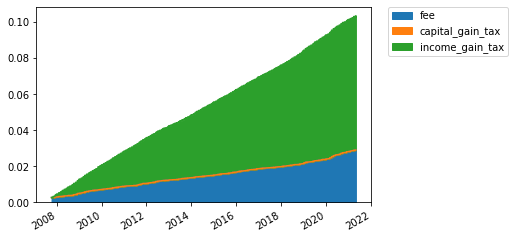
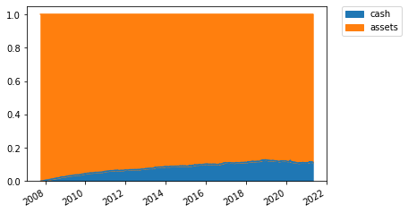
RotationStrategy with cash filter (Covariance)¶
[6]:
optimizer = RiskParityOptimizer(risk_target=[0.2, 0.25, 0.2, 0.25, 0.1])
runner = Runner(
rebalancer=MonthlyRebalancer(optimizer=optimizer, evacuator=CovarianceEvacuator(long_span=250, short_span=20, factor=0.3)),
)
runner.run(
fold=fold,
verbose=True
)
report = runner.report()
display(report.summary())
display(report.annual_summary())
ax = report.history_assets().plot()
plt.legend(bbox_to_anchor=(1.05, 1), loc='upper left', borderaxespad=0)
plt.show()
ax = report.history_weights().plot.area(stacked=True)
plt.legend(bbox_to_anchor=(1.05, 1), loc='upper left', borderaxespad=0)
plt.show()
ax = report.history_cost().plot.area(stacked=True)
plt.legend(bbox_to_anchor=(1.05, 1), loc='upper left', borderaxespad=0)
plt.show()
ax = report.history_cash_vs_assets().plot.area(stacked=True)
plt.legend(bbox_to_anchor=(1.05, 1), loc='upper left', borderaxespad=0)
plt.show()
100%|██████████| 3416/3416 [01:28<00:00, 38.74it/s]
tickers yearly total return sharpe ratio \
0 [SPY, QQQ, TLT, IEF, GLD] 1.043146 0.413398
max draw down max draw down span
0 0.885693 415
return std sharpe ratio draw down
2007-12-31 0.031053 0.053592 0.206236 0.980673
2008-12-31 -0.027006 0.077923 -0.603231 0.885693
2009-12-31 0.013472 0.078774 -0.082874 0.889187
2010-12-31 0.094655 0.052330 1.426626 0.962766
2011-12-31 0.100584 0.051289 1.571175 0.963891
2012-12-31 0.045962 0.041765 0.621623 0.974955
2013-12-31 -0.023682 0.053603 -0.814927 0.937874
2014-12-31 0.097464 0.038372 2.018783 0.955493
2015-12-31 -0.017232 0.054023 -0.689190 0.946899
2016-12-31 0.016331 0.049192 -0.074589 0.925790
2017-12-31 0.070869 0.039096 1.301109 0.937811
2018-12-31 -0.029806 0.048180 -1.033752 0.941076
2019-12-31 0.131123 0.047228 2.352889 0.961192
2020-12-31 0.130905 0.071569 1.549629 0.932604
2021-12-31 -0.027111 0.069220 -0.680608 0.932395
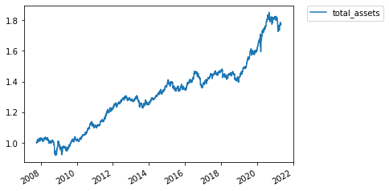
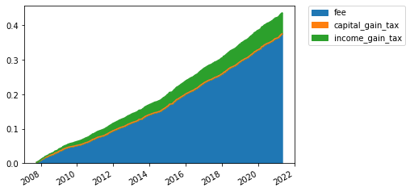
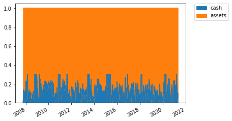
RiskParityOptimizer with cash filter (Moving Average)¶
[7]:
optimizer = RiskParityOptimizer(risk_target=[0.2, 0.25, 0.2, 0.25, 0.1])
runner = Runner(
rebalancer=MonthlyRebalancer(optimizer=optimizer, evacuator=MovingAverageEvacuator(span=150, risk_off=0.9)),
)
runner.run(
fold=fold,
verbose=True
)
report = runner.report()
display(report.summary())
display(report.annual_summary())
ax = report.history_assets().plot()
plt.legend(bbox_to_anchor=(1.05, 1), loc='upper left', borderaxespad=0)
plt.show()
ax = report.history_weights().plot.area(stacked=True)
plt.legend(bbox_to_anchor=(1.05, 1), loc='upper left', borderaxespad=0)
plt.show()
ax = report.history_cost().plot.area(stacked=True)
plt.legend(bbox_to_anchor=(1.05, 1), loc='upper left', borderaxespad=0)
plt.show()
ax = report.history_cash_vs_assets().plot.area(stacked=True)
plt.legend(bbox_to_anchor=(1.05, 1), loc='upper left', borderaxespad=0)
plt.show()
100%|██████████| 3416/3416 [01:23<00:00, 40.97it/s]
tickers yearly total return sharpe ratio \
0 [SPY, QQQ, TLT, IEF, GLD] 1.062915 0.675591
max draw down max draw down span
0 0.886817 295
return std sharpe ratio draw down
2007-12-31 0.038842 0.056865 0.331345 0.980526
2008-12-31 0.005038 0.090859 -0.164673 0.886817
2009-12-31 0.017539 0.085337 -0.028835 0.906045
2010-12-31 0.110634 0.062265 1.455604 0.951141
2011-12-31 0.139874 0.060082 1.995166 0.956310
2012-12-31 0.066010 0.046617 0.986994 0.972963
2013-12-31 -0.024715 0.058725 -0.761433 0.932458
2014-12-31 0.128831 0.043581 2.497206 0.952445
2015-12-31 -0.014900 0.060967 -0.572435 0.946433
2016-12-31 0.034356 0.053494 0.268364 0.927882
2017-12-31 0.091348 0.042310 1.686320 0.941084
2018-12-31 -0.018315 0.050705 -0.755651 0.949529
2019-12-31 0.163721 0.050726 2.833279 0.970761
2020-12-31 0.171604 0.089737 1.689427 0.906570
2021-12-31 -0.026688 0.074631 -0.625587 0.937532
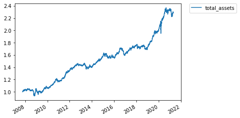

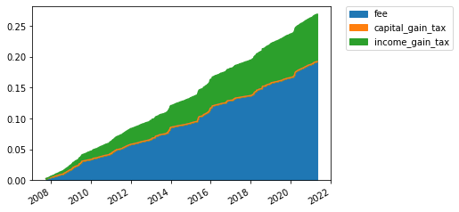
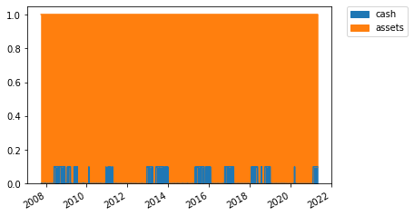
RiskParityOptimizer with cash filter (Fixed Level)¶
[8]:
optimizer = RiskParityOptimizer(risk_target=[0.2, 0.25, 0.2, 0.25, 0.1])
runner = Runner(
rebalancer=MonthlyRebalancer(optimizer=optimizer, evacuator=FixedEvacuator(level=0.05)),
)
runner.run(
fold=fold,
verbose=True
)
report = runner.report()
display(report.summary())
display(report.annual_summary())
ax = report.history_assets().plot()
plt.legend(bbox_to_anchor=(1.05, 1), loc='upper left', borderaxespad=0)
plt.show()
ax = report.history_weights().plot.area(stacked=True)
plt.legend(bbox_to_anchor=(1.05, 1), loc='upper left', borderaxespad=0)
plt.show()
ax = report.history_cost().plot.area(stacked=True)
plt.legend(bbox_to_anchor=(1.05, 1), loc='upper left', borderaxespad=0)
plt.show()
ax = report.history_cash_vs_assets().plot.area(stacked=True)
plt.legend(bbox_to_anchor=(1.05, 1), loc='upper left', borderaxespad=0)
plt.show()
100%|██████████| 3416/3416 [00:46<00:00, 73.90it/s]
tickers yearly total return sharpe ratio \
0 [SPY, QQQ, TLT, IEF, GLD] 1.069351 0.789238
max draw down max draw down span
0 0.886051 265
return std sharpe ratio draw down
2007-12-31 0.037452 0.053499 0.326217 0.981291
2008-12-31 0.005502 0.087399 -0.165887 0.886051
2009-12-31 0.037427 0.084459 0.206340 0.910872
2010-12-31 0.113127 0.059507 1.564990 0.953527
2011-12-31 0.141959 0.057830 2.108946 0.961422
2012-12-31 0.069400 0.044937 1.099309 0.973996
2013-12-31 -0.009514 0.060788 -0.485527 0.931383
2014-12-31 0.127268 0.042169 2.543760 0.963646
2015-12-31 0.002123 0.061061 -0.292778 0.953415
2016-12-31 0.038342 0.053717 0.341453 0.928838
2017-12-31 0.095358 0.042218 1.784976 0.943017
2018-12-31 -0.006603 0.051890 -0.512685 0.957622
2019-12-31 0.166661 0.049354 2.971620 0.973625
2020-12-31 0.174255 0.087300 1.766957 0.905456
2021-12-31 -0.025959 0.079212 -0.580208 0.936826
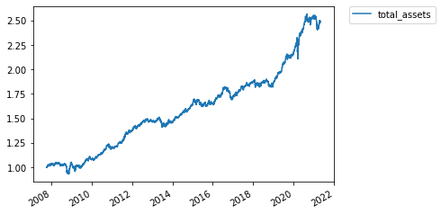
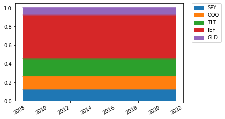
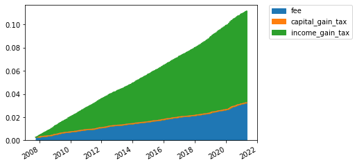
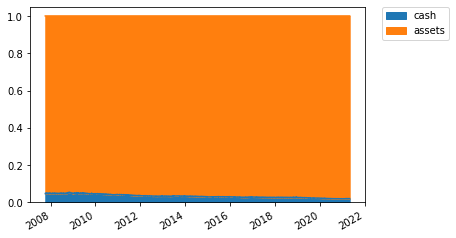
RiskParityOptimizer with cash filter (Calendar)¶
[9]:
optimizer = RiskParityOptimizer(risk_target=[0.2, 0.25, 0.2, 0.25, 0.1])
runner = Runner(
rebalancer=MonthlyRebalancer(optimizer=optimizer, evacuator=CalendarEvacuator(months=[8], risk_off=0.9)),
)
runner.run(
fold=fold,
verbose=True
)
report = runner.report()
display(report.summary())
display(report.annual_summary())
ax = report.history_assets().plot()
plt.legend(bbox_to_anchor=(1.05, 1), loc='upper left', borderaxespad=0)
plt.show()
ax = report.history_weights().plot.area(stacked=True)
plt.legend(bbox_to_anchor=(1.05, 1), loc='upper left', borderaxespad=0)
plt.show()
ax = report.history_cost().plot.area(stacked=True)
plt.legend(bbox_to_anchor=(1.05, 1), loc='upper left', borderaxespad=0)
plt.show()
ax = report.history_cash_vs_assets().plot.area(stacked=True)
plt.legend(bbox_to_anchor=(1.05, 1), loc='upper left', borderaxespad=0)
plt.show()
100%|██████████| 3416/3416 [00:46<00:00, 74.22it/s]
tickers yearly total return sharpe ratio \
0 [SPY, QQQ, TLT, IEF, GLD] 1.066202 0.706701
max draw down max draw down span
0 0.87697 268
return std sharpe ratio draw down
2007-12-31 0.038842 0.056865 0.331345 0.980526
2008-12-31 0.003450 0.097795 -0.169228 0.876970
2009-12-31 0.028944 0.088603 0.100940 0.905830
2010-12-31 0.111497 0.062158 1.471993 0.951141
2011-12-31 0.140769 0.058565 2.062134 0.959043
2012-12-31 0.064668 0.046143 0.968013 0.972963
2013-12-31 -0.012446 0.062782 -0.516800 0.928235
2014-12-31 0.125779 0.043157 2.451009 0.960485
2015-12-31 -0.000697 0.062758 -0.329797 0.950861
2016-12-31 0.034472 0.055326 0.261571 0.924453
2017-12-31 0.092979 0.043151 1.691251 0.939075
2018-12-31 -0.011297 0.054018 -0.579374 0.953900
2019-12-31 0.159717 0.050312 2.777027 0.972434
2020-12-31 0.175673 0.090113 1.727531 0.906570
2021-12-31 -0.027524 0.080813 -0.588078 0.933740
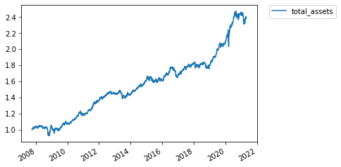
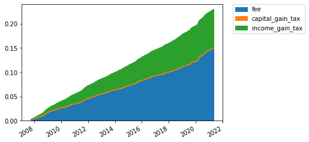
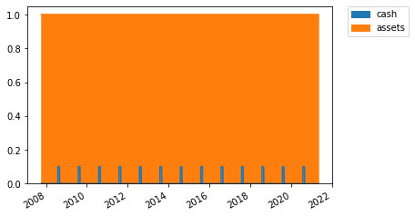